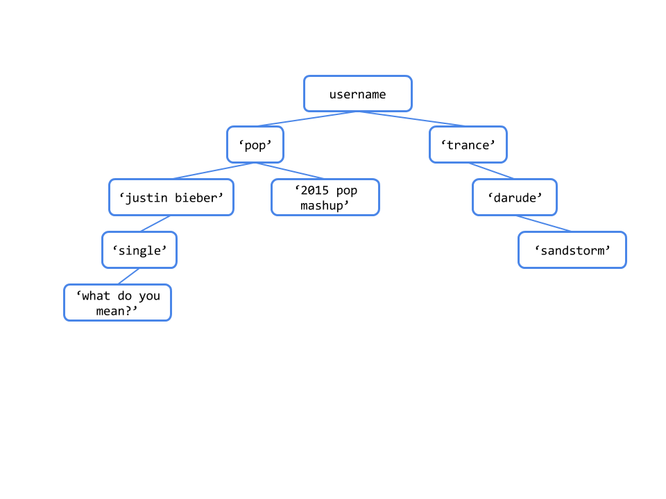

Lab 8: Trees
Trees
A tree is a data structure that represents a hierarchy of information. A file system is a good example of a tree structure. Below is an incomplete diagram of what a unix system directory might look like.

As you can see, unlike trees in nature, the tree abstract data type is drawn with the root at the top and the leaves at the bottom.
Some tree terminology:
- root value: the value at the top of the tree, selected by the
rootfunction - branches: a list of trees directly under the tree's root, selected by the
branchesfunction - leaf: a tree with zero branches
- node: any location within the tree (e.g., root node, leaf nodes, etc.)
Here is a recursive definition of a tree:
A (non-empty) tree is either a single root node, or a root node together with a collection of branches, each one a tree.
Hence, for an implementation we have the following constructor and selectors:
Constructor
tree(root, branches=[]): creates a tree object with the givenrootat its root and list ofbranches.
Selectors
root(tree): returns the value in the root oftree.branches(tree): returns the list of branches of the giventree.
Convenience function
is_leaf(tree): returnsTrueiftree's list ofbranchesis empty, andFalseotherwise.
For example, the tree generated by
t = tree(1,
[tree(2),
tree(3,
[tree(4),
tree(5)]),
tree(6,
[tree(7)])])would look like this:
1
/ | \
2 3 6
/ \ \
4 5 7To extract the number 3 from this tree, which is the entry of the root of
its second branch, we would do this:
root(branches(t)[1])The print_tree function prints out a tree in a
human-readable form. The exact form follows the pattern illustrated
above, where the root's label is unindented, and each of its branches is
indented one level further.
def print_tree(t, indent=0):
"""Print a representation of this tree in which each node is
indented by two spaces times its depth from the entry.
>>> print_tree(tree(1))
1
>>> print_tree(tree(1, [tree(2)]))
1
2
>>> numbers = tree(1, [tree(2), tree(3, [tree(4), tree(5)]), tree(6, [tree(7)])])
>>> print_tree(numbers)
1
2
3
4
5
6
7
"""
print(' ' * indent + str(root(t)))
for b in branches(t):
print_tree(b, indent + 1)pyTunes Trees
We have created a music library called pyTunes. pyTunes organizes songs in folders that are labeled by category -- in other words, in a tree! The value at the root of the tree is your account name, which branches out into a hierarchy of categories: genres, artists, and albums, in that order. Songs (leaves in the tree) can be stored at any of these levels. A category cannot be empty (i.e. there will never be a node for a genre, artist, or album with no branches).
Required Question 1: Create pyTunes
All pyTunes accounts come with the free songs below. Define the function make_pytunes, which takes in username and creates this tree:

The doctest below shows the print_tree representation of a default pyTunes tree.
def make_pytunes(username):
"""Return a pyTunes tree as shown in the diagram with USERNAME as the value
of the root.
>>> pytunes = make_pytunes('i_love_music')
>>> print_tree(pytunes)
i_love_music
pop
justin bieber
single
what do you mean?
2015 pop mashup
trance
darude
sandstorm
"""
"*** YOUR CODE HERE ***"
Requied Question 2: Number of Songs
A pyPod can only hold a certain number of songs, and you need to find out
whether or not all the songs in your pyTunes account will fit. Define the
function num_songs, which takes in a pyTunes tree t and returns the number
of songs in t. Recall that there are no empty directories in pyTunes, so all
leaves in t are songs.
Hint: You can use is_leaf to check whether a given tree is a leaf.
>>> no_branches = tree(1)
>>> is_leaf(no_branches)
True
>>> is_leaf(tree(5, [tree(3), tree(4)]))
False
def num_songs(t):
"""Return the number of songs in the pyTunes tree, t.
>>> pytunes = make_pytunes('i_love_music')
>>> num_songs(pytunes)
3
"""
"*** YOUR CODE HERE ***"
Required Question 3: Add Song
Of course, you should be able to add music to your pyTunes. Write add_song to add song to the given category. You should not be able to add a song under a song or to a category that doesn't exist. See the doctests for examples.
def add_song(t, song, category):
"""Returns a new tree with SONG added to CATEGORY. Assume the CATEGORY
already exists.
>>> indie_tunes = tree('indie_tunes',
... [tree('indie',
... [tree('vance joy',
... [tree('riptide')])])])
>>> new_indie = add_song(indie_tunes, 'georgia', 'vance joy')
>>> print_tree(new_indie)
indie_tunes
indie
vance joy
riptide
georgia
"""
"*** YOUR CODE HERE ***"
Required Question 4: Delete
You also want to be able to delete a song or category from your pyTunes. Define the function delete, which takes in a pyTunes tree t and returns a new tree that is the same as t except with target deleted. If target is a genre, artist, or album, delete everything inside of it. It should not be possible to delete the entire account or root of the tree. Deleting all the songs within a category should not remove that category.
def delete(t, target):
"""Returns the tree that results from deleting TARGET from t. If TARGET is
a category, delete everything inside of it.
>>> my_account = tree('kpop_king',
... [tree('korean',
... [tree('gangnam style'),
... tree('wedding dress')]),
... tree('pop',
... [tree('t-swift',
... [tree('blank space')]),
... tree('uptown funk'),
... tree('see you again')])])
>>> new = delete(my_account, 'pop')
>>> print_tree(new)
kpop_king
korean
gangnam style
wedding dress
"""
"*** YOUR CODE HERE ***"